Introduction
When I completed my Locations Strategy Guide, some comments indicated that jumping into the Picard deck as a starting point for a Captain review would be beneficial for new players, and I can't argue with the logic. I will say that doing this analysis reminds me of the attitudes of the hosts of the Space Cats Peace Turtles Podcast as they first analyzed factions for Twilight Imperium 4th edition. They've commented that their thoughts then were so totally off base and they had no idea how much they would change. I imagine I will feel similarly reading this again in even a few months. However, it's worth diving in for the benefit of new players, many of which may be starting with this deck. Because there will presumably be more new players reading this guide than perhaps other guides I write up, I'm going to try to point out some basics of the game that are reinforced by Picard's deck, just to help remind and clarify rules of the game. I'll also again reiterate that many of my thoughts here may just be plain WRONG. I've played Picard 8 times, and played against him once, though this isn't a guide for playing against Picard. Maybe I'll get to that someday.
↑ back to topCaptain Board
His basic side track multipliers max out at 6x for Research, 7x for Influence, and 5x for Military. He does have a lower threshold for his 3x Military, gaining that multiplier on space 5, so it's not necessarily worth ignoring completely if you have Military focus cards in your deck towards the end of the game.
↑ back to top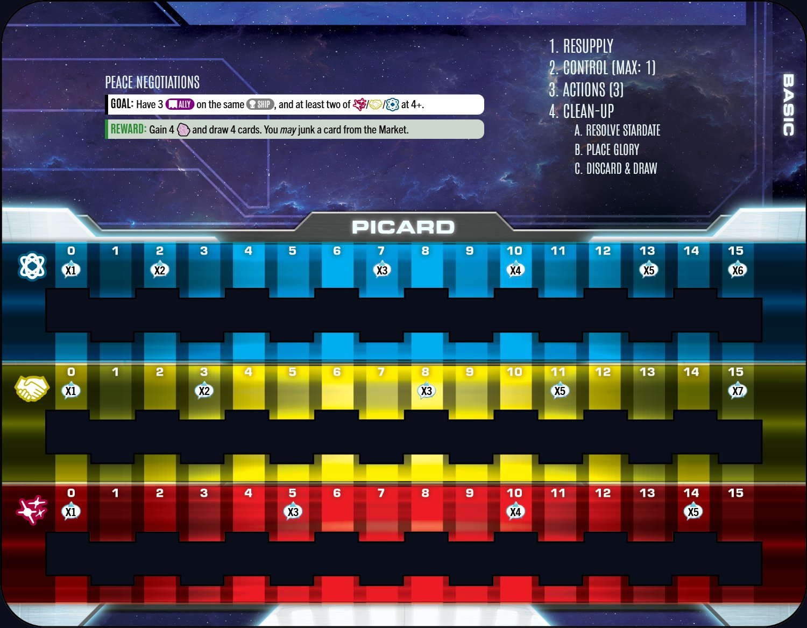
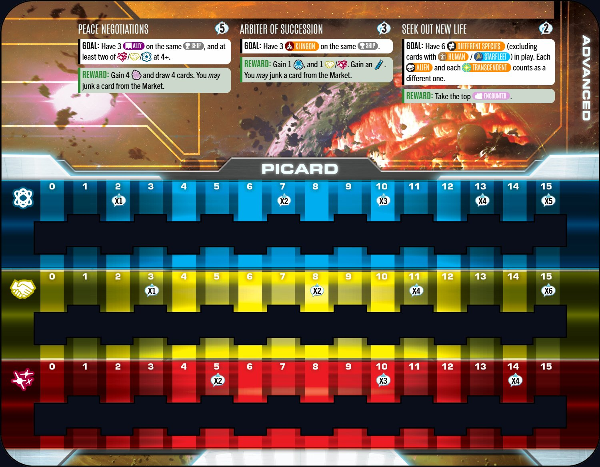
Missions
His Peace Negotiations mission is to have 3 Ally cards on the same ship, and at least two of his tracks at 4+. Completing this mission rewards you with four dilithium and drawing four cards, which is probably one of the best universally useful mission benefits in the game, especially if you can wait to complete your mission until the beginning of a turn. You also get to junk a market card (without any tokens on it, as always), which is a pretty commonly found benefit. I've found that this mission can get accomplished pretty easily with Picard's ability to beam gained allies to ships (more on that later), so long as you aren't using your ship to complete missions. That's difficult as Picard has no non-market deployed-ship access until his development deck, so you'll want to gain some more ships early if you plan to control locations and complete this mission simultaneously. I usually don't start working towards this mission until after I've controlled my first location and used Will Riker to get the Enterprise D back into play. Point is, don't worry too much about accomplishing this mission early. It can be okay to wait and wrap it up midway in the game or later. On his advanced side, the thresholds are one lower, maxing out at 5x for Research, 5x for Influence, and 4x for Military. You now don't even get points for Military cards until space 5, and significant multipliers don't kick in until spaces 10-11. My suggestion here would be to make sure to focus on one or two tracks based on the skills that come out of the location deck. The Peace Negotiations mission is now worth 5 points.
Arbiter of Succession requires players to have 3 Klingons on the same ship, which is also relatively easy as this could include cargo with the Klingon tag or the ship itself, such as the K'Tinga Battlecruiser. In addition to 3 points, this mission gives you a glory, one space on the Influence or Military track, another action token, and the ability to junk a card from the market.
Finally, Picard's Seek Out New Life mission requires six different species in play, excluding cards with Human or Starfleet tags. Alien and Transcendent cards count as different species. The reward is to take the top Encounter card, which is misprinted as "Discovery" in the first printing of ST:CC. While I wouldn't break my Worf's back trying to accomplish this mission, it should be relatively easy for any player gaining a variety of Ally cards.
↑ back to topCaptain Card & Starting Components
Picard has five away teams and has the Starfleet and Human tags. His main captain scoring comes from each Ally card you have at the end of the game (including in your log). He has a reaction (which exhausts when used and cannot be used again until refreshed at the end of the round) that allows him to gain a glory token when he gains an Ally. Then he may beam that ally directly to a ship. This is great for his missions, but also allows players to gain a ton of points. Ally cards generally provide 3 points and Picard has high motivation to get as many as possible, leading to high deck scoring.
Picard starts the game with the U.S.S. Enterprise-D deployed. It has the Starfleet tag and a wild skill which makes it super versatile for whichever Utilize strategy you end up pursuing. Its Play action deploys it, and then allows for a warp or beaming a card to the ship (no card discard required). It has the standard three Table Operations which allow players to warp the ship at the cost of 1 dilithium, discard a card to beam a card to the Enterprise-D, or promote a duty officer from their hand. Remember that beaming or promoting a card must be to a card in your hand unless the card expressly indicates otherwise. Also as a reminder, unless you can refresh the Enterprise, you can only do one of those three Activations a turn.
↑ back to top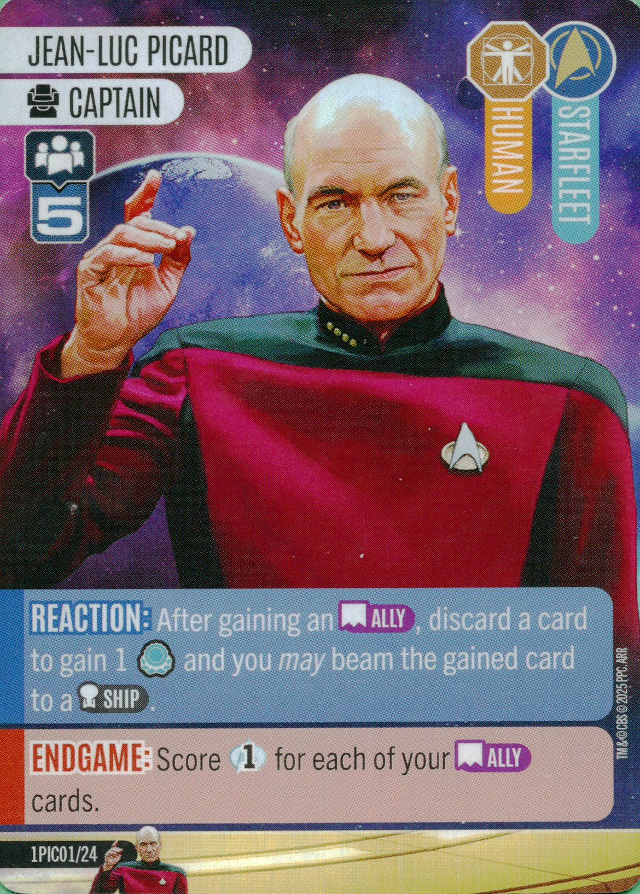
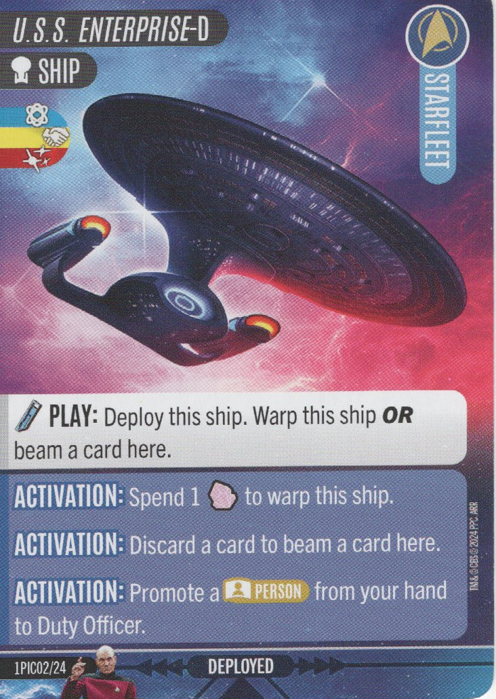
Picard's Available Cards
Picard has a 10 card starting hand of available cards. There are two Person cards, six directives, a location, and an incident. I'll get into my ideal starting strategies after giving the basics of these cards.
↑ back to topWill Riker (Person)
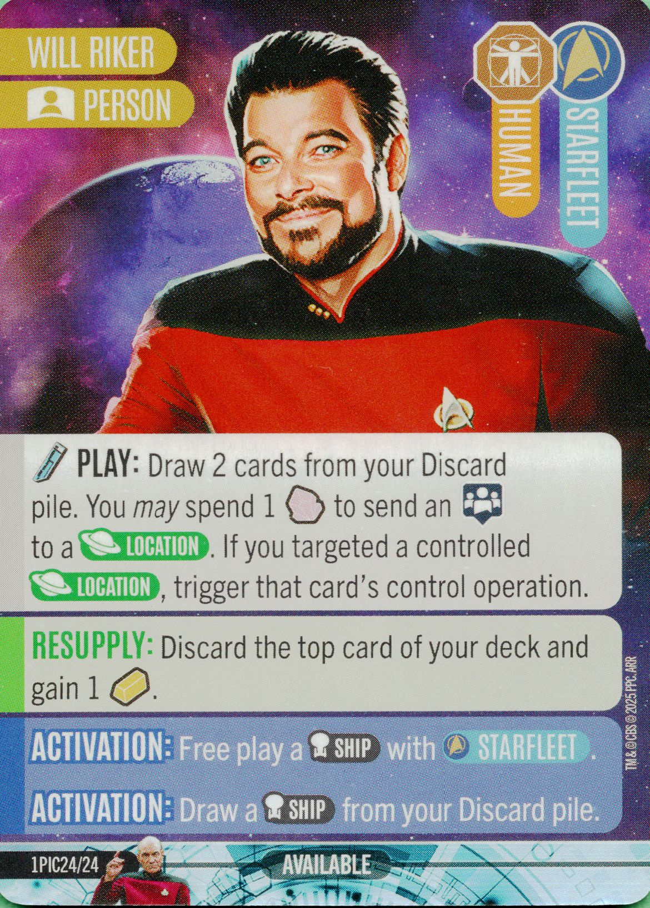
Will is one of the most powerful person cards in the game, in my opinion. The ability to gain cards AND send an away team is awesome enough, but he also lets you repeat a control operation of a location you control. Alternatively, he's super useful for getting dismissed ships back into your hand, or otherwise getting Starfleet ships back into the game for free. And his resupply is also fantastic as it is a consistent Latinum engine and contributes to deck churn. An extremely useful person card to have as a duty officer.
↑ back to topWorf (Person)
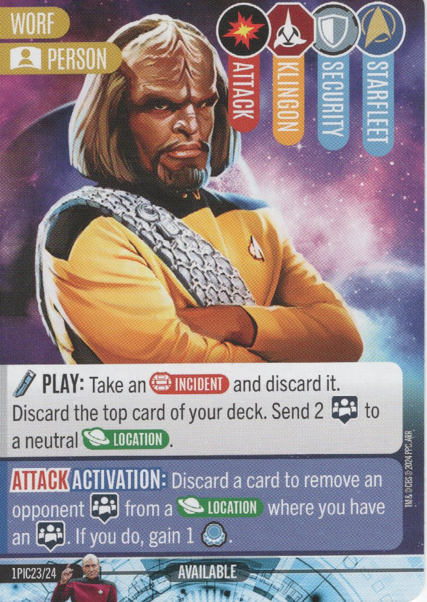
Worf has an interesting Play action, as it's one of the most reliable ways to get away teams out for Picard. The cost is an incident and a random card discarded off the top of your deck, which is usually good. Remember, drawing a card also gets it off your deck, you just get to potentially use it too, which is why drawing is always superior to discarding the top card of the deck. But discarding a card still helps churn the deck, which has value as well. Worf also is excellent for gaining glory while simultaneously wrestling control of locations away from your opponents. Alternating between him and Riker as an early game duty officer is not a bad move. There are at least two versions of Worf in the game so far, the other being a Sisko Development card, but the game doesn't seem to have any limitation on cards with the same name being in-play at once.
↑ back to topFarpoint Station (Location)
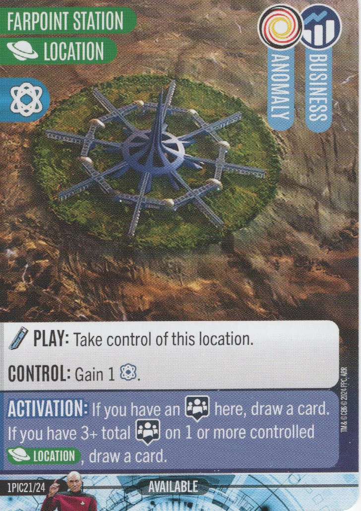
Farpoint is a simple location that I try to get out as soon as possible. For one thing, it's better not clogging up your deck, and you can use it for extra dilithium or a research track skill with Utilize so you might as well get it out before your first Utilize directive. But the real benefit here is the card draw activation ability. Getting that flexibility of an extra card is great. I don't typically have more than three away teams on controlled planets most of the game, simply by nature of the limit of five teams that Picard's captain card allows, but even just throwing one away team is beneficial. And if you're repeatedly using Riker for his Play action, you're going to have away teams on controlled planets eventually, even if it's for short periods of time.
↑ back to topRed Alert (Incident)
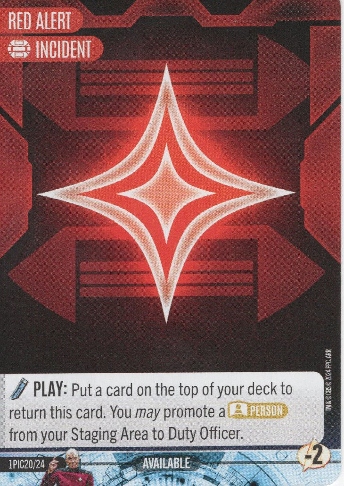
Picard starts the game with one Incident in hand, but it's actually not that bad. First, it allows you to play a person to your staging area and also get the benefit of making them your duty officer on the same turn, which is great for Worf and good for Riker too. It's also your best option for promoting duty officers if you no longer have the Enterprise-D in play, whether because it's been dismissed or, Koala-forbid, logged. There are worse incidents to have at the beginning of the game.
↑ back to topRecruit (Directive)
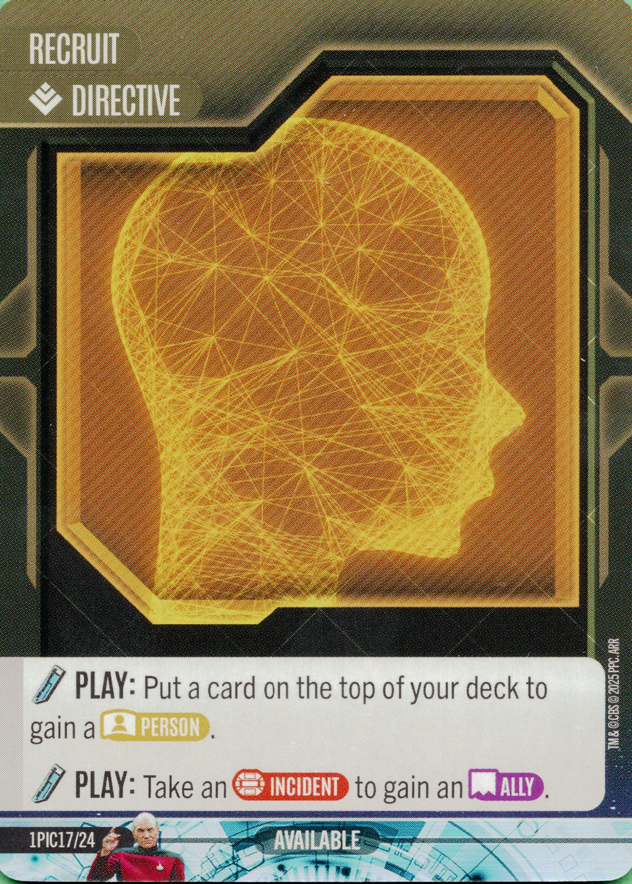
Your primary source of new Person cards and Ally cards, Recruit is a solid directive. For Picard, you may find yourself using the second action to gain Ally cards and incidents more often, just make sure you're aware of the general number of incidents left in the deck so you're not risking the Burn ending the game. Gaining a person only costs you a card from your hand and a slowdown of churning through your deck, but it can be worth it, especially for a really great person card. One of Picard's strategies involves logging as many cards as possible, and I would avoid that with Recruit as it's so critical for getting 2 of the 4 market cards.
↑ back to topStrange New Worlds (Directive)
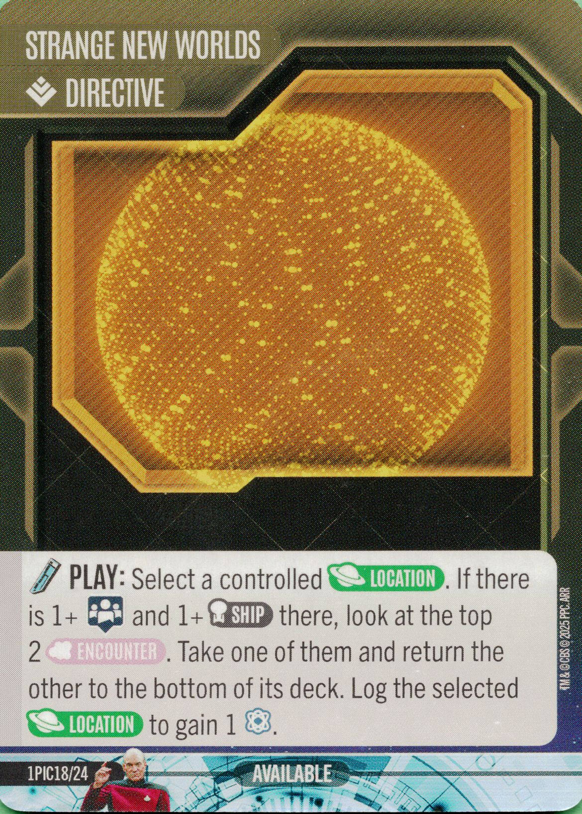
Strange New Worlds is a great point and Encounter generator, but it comes at a price. You don't have a choice to not log the selected location (the word "may" does not appear) so you're going to be losing the ability of whatever location you get. Losing Farpoint is going to reduce your card draw, for example. And because of Riker, you don't want to log something with a great Control ability. Nor can you afford to log any locations with red endgame scoring text, or those points won't be considered at the end of the game (any printed points at the bottom still count). The benefit is fantastic of course, and you get to put the gained Encounter directly into your hand ("take"), which can open up multiple turn strategies. So try to play this as a first action during your turn so you have the ability to pivot to the strategy best supported by the Encounter you draw.
↑ back to topUtilize (Directive)
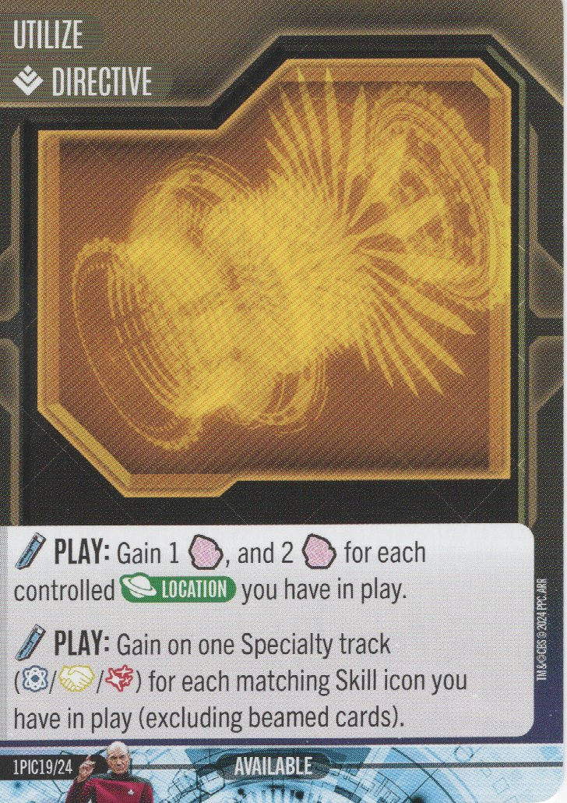
Most decks have this card as your primary method of gaining Dilithium or gaining on skill tracks. Early on, it's worth alternating as needed in order to complete Picard's Peace Negotiations mission or have Dilithium for warping ships or paying ability costs. It's important to remember that you only get to pick one track, and you move up that track for each skill icon on an in-play non-beamed card. This includes your staging area!
↑ back to topSet A Course (Directive)
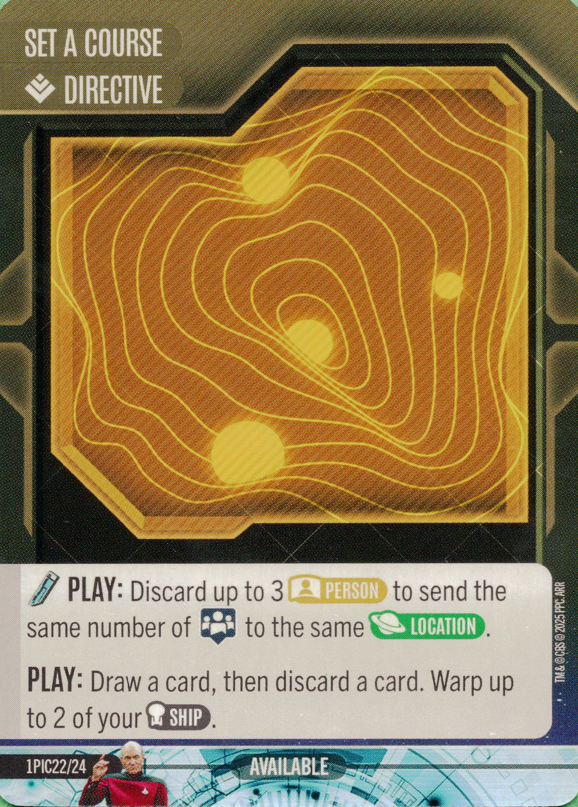
A lot of discussion I've seen on this directive focuses on using it to send away teams. I don't tend to use it that way, and I'll get into that below. Since there are only two person cards in Picard's starting deck, you can't get more than two away teams out, and Worf already does that better. So I tend to use this card, at least early game, to warp the Enterprise to a planet I want to have a bit of control over as well as get some card churn. That way I'm not wasting my starting Dilithium on warping the Enterprise and I can use it to beam a card or promote a duty officer.
↑ back to topDiplomacy (Directive)
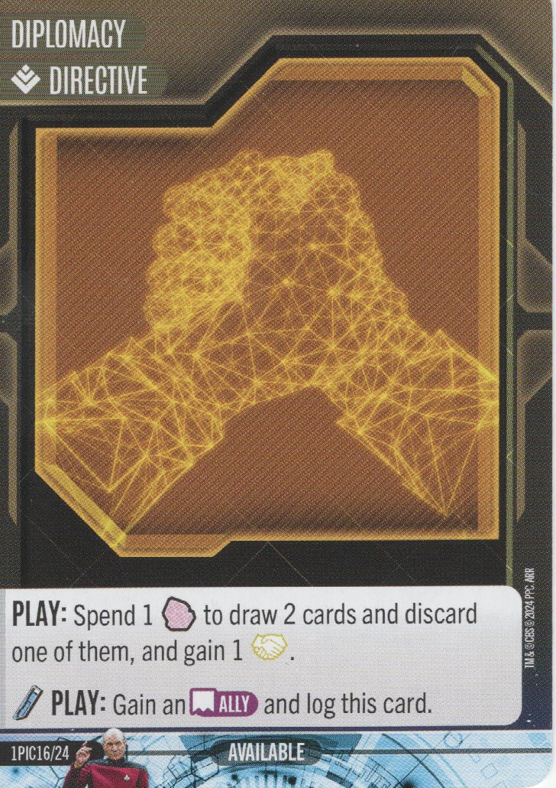
Diplomacy is an interesting directive that is unique to Picard. Gaining an Ally without having to worry about an additional incident is nice, and the card goes to the log never to clog up your deck again. But certainly consider using that first ability a few times. It doesn't cost an action token, it only costs a dilithium, it moves you up the Influence track, and it promotes deck churn along with the agency of selecting which card you want to discard between the two. Your worst case scenario is that you want both cards, which is still usually a better outcome than leaving them in your deck.
↑ back to topAnalyze (Directive)
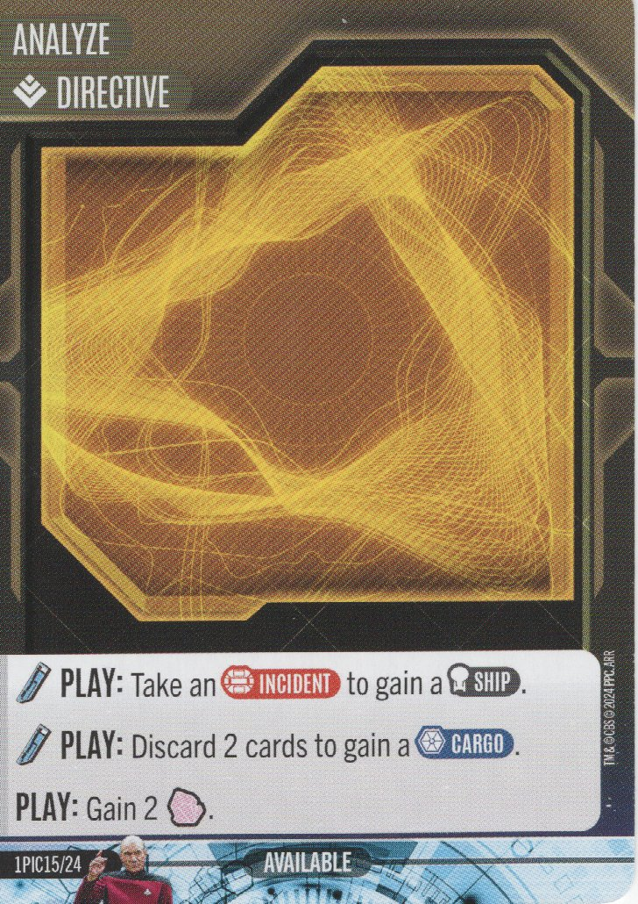
Analyze is a difficult directive to play, because you're presented with so many options. It's the only way to get a Ship or a Cargo, and the costs are pretty good. An incident for a Ship isn't bad at all (unless you're burning through the incident deck) and as long as you have enough cards discarding for Cargo isn't bad either. But don't sleep on the Dilithium gain ability, especially when you have three other actions that cost an action token already planned out.
↑ back to topStarting Hand Strategies
Now that we've looked at these cards in isolation, let's put them together to discuss some starting strategies. You can't predict your hand, but you can do some things to help control what you get. For instance, as long as Set a Course is in your starting hand, you're going to get to see a sixth card from your deck. Likewise, using the play ability of Diplomacy isn't a bad way to get some more cards as well. If either of those is in your starting hand, I recommend using them for their non-action token play ability in order to get more cards.
Let's talk about what isn't useful. Strange New Worlds is almost pointless early in the game. Even if you wanted to use it, you'd have to have a location out as well as a Ship on the location. You can theoretically get this by playing Farpoint Station, playing Riker, Warping the Enterprise-D, and then playing Strange New Worlds, but this would take all your action tokens for the round, and it would lose you your only deck location until you get to your Development Pile. That means you're sacrificing some Dilithium early, any additional card draw from Farpoint, and you no longer have the Enterprise out to promote Duty Officers. It's a strategy that requires a decent number of specific cards available, and it has downsides. My strong preference would be to avoid this method, meaning that if you have a chance to discard Strange New Worlds or beam it to the Enterprise, I would recommend doing so. But if you're going to go this route let's hope you get a really useful choice of encounters.
I also don't think you necessarily want to build your starting strategy around Utilize. To be sure, you could use it to gain some Dilithium early if you have Farpoint Station out. You could also use Farpoint and the Enterprise-D to gain two spaces on the Research track. But a little patience might make it worth it to wait. You can get two Dilithium, without spending an action if you use Analyze, and that's enough for many of the tasks you want to accomplish the first time through the deck.
The big question on duty officers is whether to focus on Riker or Worf. Sometimes, you don't have a choice based on what you draw, so let's assume you're stuck with one or the other first. If you have Riker, Farpoint, and Red Alert, you can have a nice starting turn by playing Farpoint, Playing Riker to send an away team to Farpoint, activating Farpoint to gain a card, and then if you still don't have Worf, you can play Red Alert to promote Riker to Duty Officer. If you did get Worf, promoting him using the Enterprise-D and using his Activation is great, if you're playing a human who already put some away teams unaccompanied by ships out. That would give you the freedom to use another card. Another point for Riker: try to use Diplomacy or Set a Course before using him, since he can gain two cards from the discard. Worst case scenario you just discard these cards at the end of the turn, but best case you can beam something to the Enterprise-D or you can use the extra cards to Analyze some Cargo.
If you have Worf and not Riker, reverse the strategy and use Worf to get some away teams out. You might want to make sure you Warp the Enterprise to whatever planet Worf sent away teams to for early neutral location control. Promoting Riker would then help with both the Resupply and getting the Enterprise back at the Action Phase of the next round.
If you're stuck with mostly cards that don't allow for more card draw, I would recommend looking at the market and seeing if there's anything that really goes well with a Picard strategy. Cards that log other cards or Synthetic/Android cards are great. Anything with more card draw is helpful too. A turn where Farpoint, Recruit, and Analyze are played isn't bad at all, especially because you'll need more ships eventually and Analyze is the only way to get that done. With Diplomacy and Set a Course you're going to have quite a few options, so focus on getting through your Reserve deck in order to get Data and Dr. Crusher.
↑ back to topPicard's Reserve Cards
Picard has four reserve cards consisting of two Person cards, one Ship, and a directive. I'll review them individually then discuss.
↑ back to topData (Person)
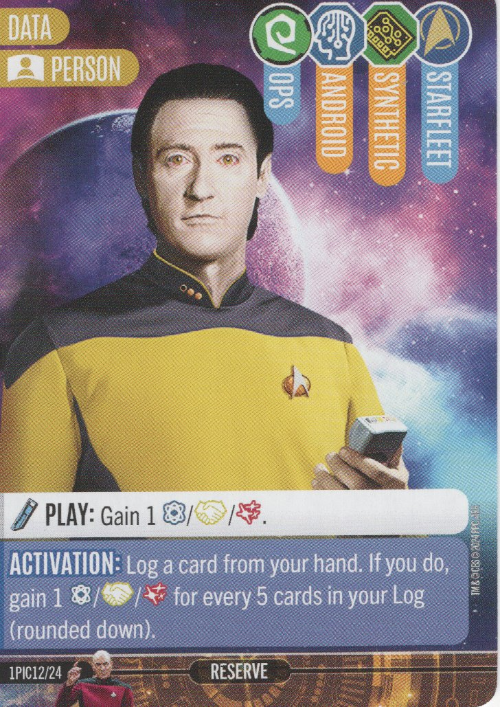
Data is an interesting one. His play ability is not anything too incredible, though it provides flexibility on which track to move up. But he represents a potentially powerful and unique strategy as a duty officer. By using him to log a card from your hand every turn, he can lead to massive gains on the skill tracks as the game progresses. I think you really have to go into the game knowing this is the route you want to go down, because you'll want to start logging everything in sight if that's the plan. It can also lead to an extremely thinned deck which is great for enlisting developments later on.
↑ back to topBeverly Crusher (Person)
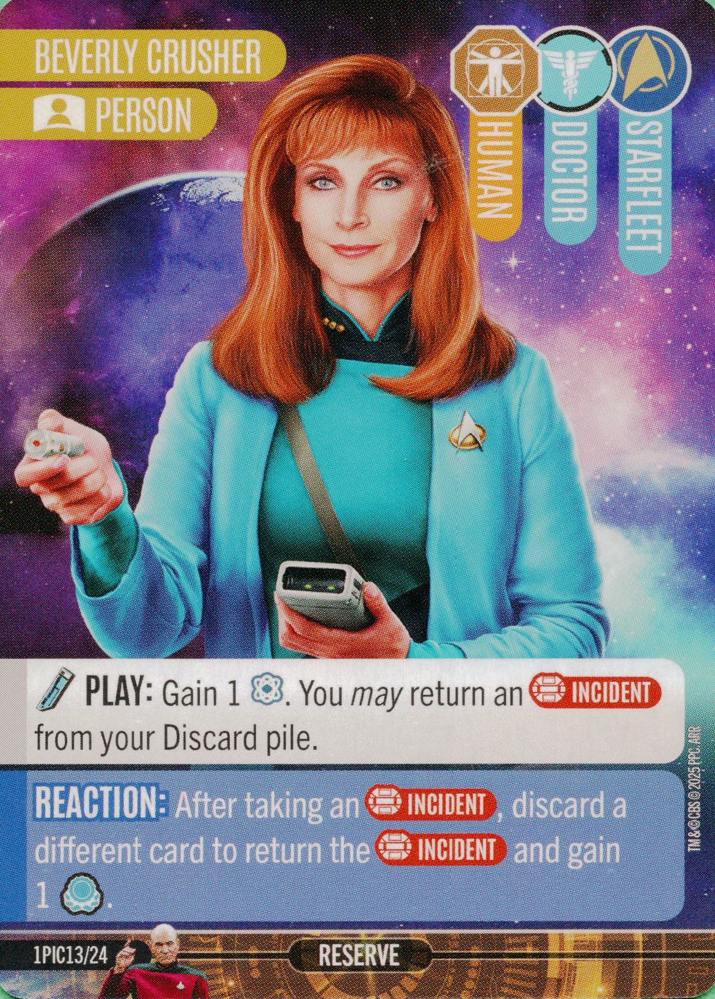
Beverly is a great reserve card, as she deals with incidents in an efficient manner. Use incidents as cards during a discard ability, then return them without resolving them using Beverly. It's perfect. Her Duty Officer ability is okay, because she helps you return incidents and gain Glory. However, this activation is in direct conflict with one of my favorite Development cards in Picard's deck, so there are games where I log Beverly almost immediately. We'll discuss it shortly.
↑ back to topType 7 Shuttlecraft (Ship)
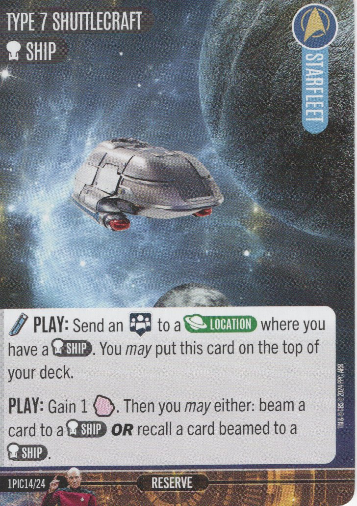
I kind of hate this card. As many people in the rules forum have asked and has been clarified, you can't deploy this Ship, which means it can't control locations. It can send away teams, but only to locations where you already have a ship, at the cost of an action. That's not bad if you're using Data to log cards and don't have that many options in your hand, but it's still not super efficient. I tend to use it more for the Dilithium and the beam ability, because it doesn't cost an Action token. I think that a clever player could build a strategy around always returning this card to the deck, but I would be concerned that it effectively reduces the churn from five cards to four.
↑ back to topFirst Contact (Directive)
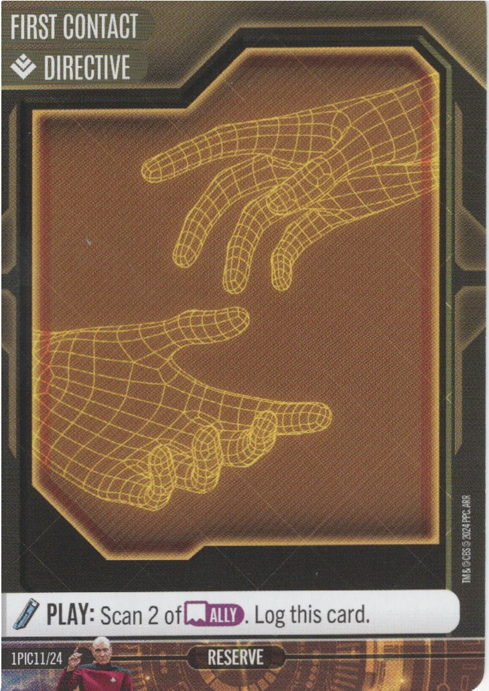
A very solid Directive which allows you to look at the top two cards of the Ally deck and choose to gain one of them or the face-up market card. I use this as fast as possible because there's no reason to let it clog up your deck. Use it, log it, move on. The only circumstance I could see delaying it is in order to complete the timing for Picard's Peace Negotiations mission. But that's going to be rare.
Picard has a small reserve deck so it doesn't take terribly long to burn through it. Since you don't control the order cards come out, I would suggest that you're hoping for First Contact or Data first. Either card thins your deck (Data more than First Contact) and gives good benefits for their costs. There's not a lot of strategy you can actually control, but the good news is that you're going to get onto Developments pretty quickly.
↑ back to topPicard's Development Cards
Picard has eight Development cards that cover all the different types of market cards, as well as locations and a directive. Developments always have a cost, which might limit your ability to get them. However, it's worth reminding you that in a pinch, Glory can be spent for 2 Dilithium or 1 Latinum, but that's trading points for other points and if you have a supply of Dilithium from Utilize, now's the time to use it.
↑ back to topDaystrom Institute (Location)
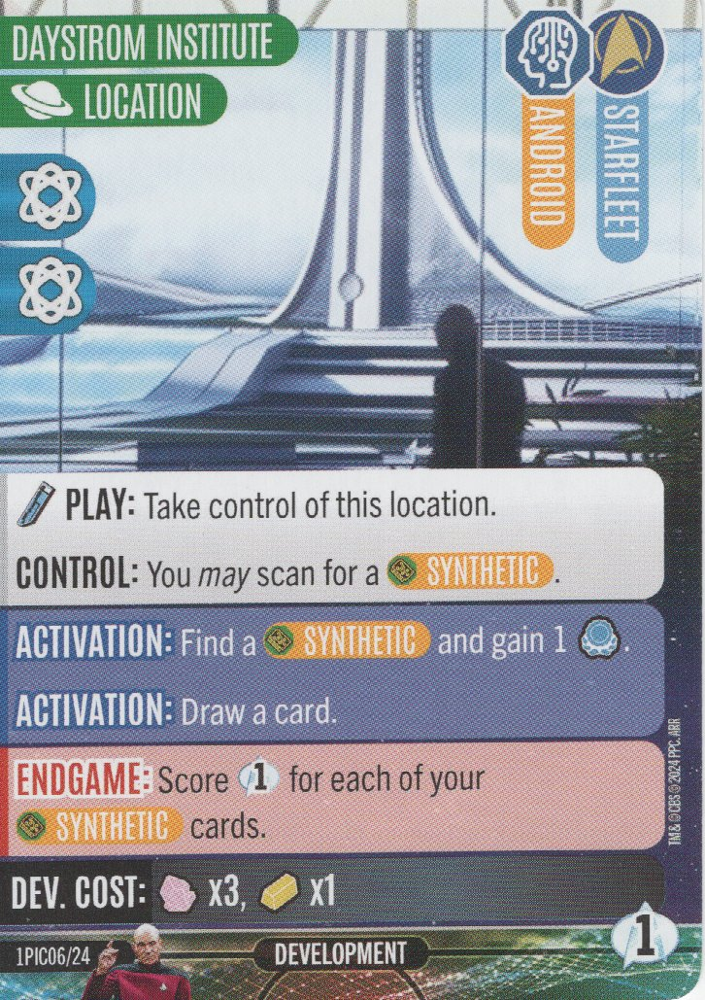
Dev Cost: 3 Dilithium, 1 Latinum
There's lots here, but essentially this is a great way to add extra synthetic cards to your deck. Right now there's only 3 synthetic cards in the Person deck (Moriarty, B-4, and Peanut Hamper) and one encounter (V'Ger) but you can't scan for it. Ironically V'Ger is great for logging cards so it works well with the Data strategy. This means that you've only got a maximum of five total points right now from this endgame ability. But that's not the value in the card, as you can use the activations to find a Synthetic and gain a glory, which is a great free Activation to take. If you truly have no Synthetics to find, you can still draw a card. Overall, solid location with some good late-game research skills to boot.
↑ back to topStarbase 74 (Location)
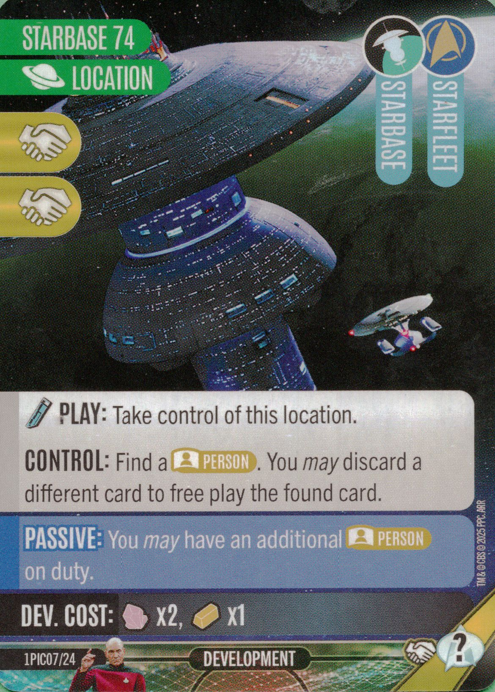
Dev Cost: 2 Dilithium, 1 Latinum
I love Starbase 74 because you can get 2 duty officers at once. That's it. If that was all this card did, that would be enough for me, because strategies really open wide when you can combo multiple duty officers. It does have a great control ability as well, and two influence tags for late game influence advancement. It scores for the Influence track as well.
↑ back to topGeordi La Forge (Person)
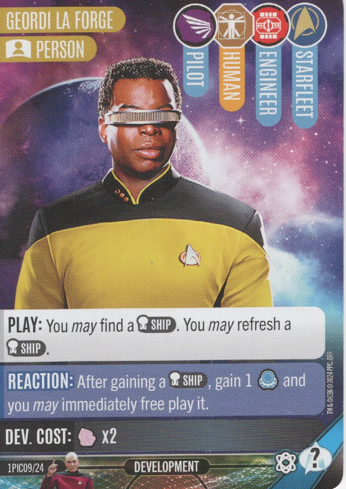
Dev Cost: 2 Dilithium
Geordi is a great Person card because he's cheap, his points are based on the research track which is one of Picard's favored ones, and he's got a lot of good tags for Incidents. But his reaction is beautiful, allowing you to gain and free play a ship with a glory to boot. I don't think it's the strongest Reaction card in Picard's deck, but it's certainly not a bad one. Also, his action doesn't cost an action token which is excellent.
↑ back to topDeanna Troi (Person)
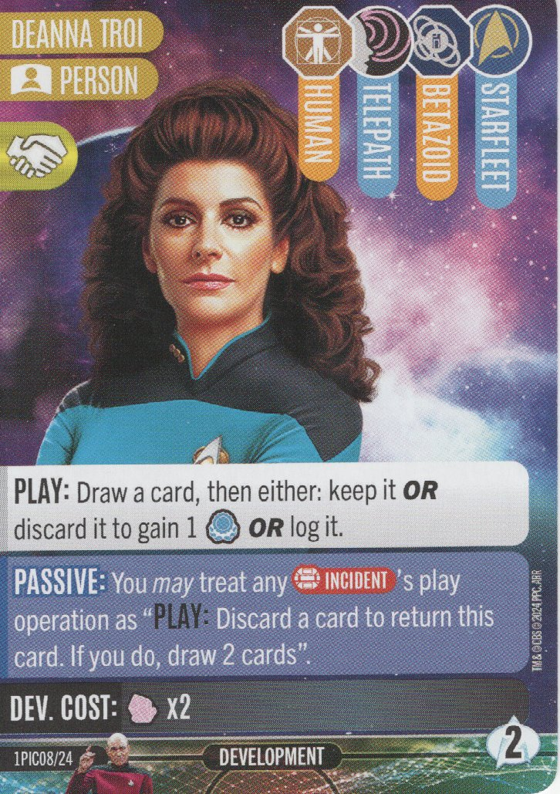
Dev Cost: 2 Dilithium
I think Deanna is one of the best cards in the whole game. If given the opportunity to enlist her early using Ancient Relay Station, I would do so every time. Deanna's play ability is good and versatile, allowing for card draw without spending an action token, and then giving players the ability to keep it, gain Glory, or log depending on their strategies. But her Passive ability is outrageous, allowing her to return incidents and discard a card to get two more cards. This is awesome. I once had a turn where I did this, no joke, five times in a row. Remember, Passive abilities do not exhaust, and this Passive text does not require an action token. I had an incident heavy deck, and I used Deanna to wipe them out in one fell swoop. I even got two Developments on that turn because my entire deck was in my hand or discard pile, requiring a reshuffle on Incident four or five followed by drawing a new hand which was the whole deck plus another Development. There's a lot you can do with this card, especially with Starbase 74 in play.
↑ back to topPhasing Cloak (Cargo)
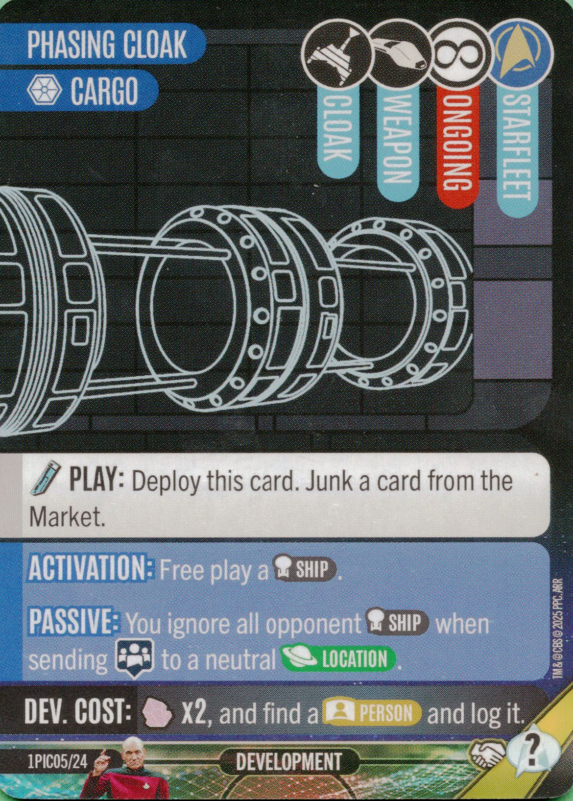
Dev Cost: 2 Dilithium, find a Person and log it
How I love the thematic tie-in of getting Admiral Pressman and the Phasing Cloak out at the same time. Or even better, junking Pressman from the market as part of this action. Sorry to all you Enterprise fans who had your finale hijacked by this TNG episode, but the card itself is pretty great. A simple, no cost activation allows you to free play a ship (excellent) and the passive ability renders your opponents unable to stop you from sending away teams (even more excellent). It's a great card, which goes along with the theme of Picard's Development.
↑ back to topTamarians (Ally)
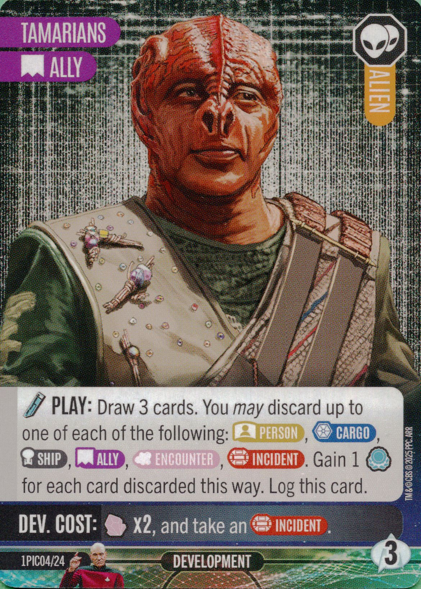
Dev Cost: 2 Dilithium, take an Incident
I really like Picard's sole Ally card if only because this episode of Star Trek essentially predicted memes. The card itself is a great one-off. The beast at Tanagra is getting up to six different types of cards in your hand. I've regularly used this but have experienced shaka, when the walls fell, with only two or three types getting drawn. But if you can get six glory out of this, Arnock, on the night of his joining. Likewise, if you're discarding cards, you aren't using them for the rest of the turn. This is often a good card to play to help speed up the endgame (as it gains glory) and you can use it towards some of Picard's missions. It's not necessarily my first choice of developments, though situationally that can obviously change. Maybe I'm just Kiteo, his eyes closed on how good this card is.
↑ back to topU.S.S. Bozeman (Ship)
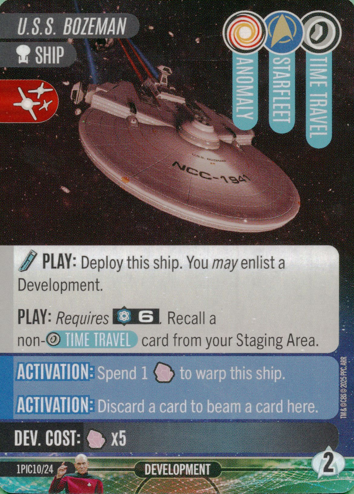
Dev Cost: 5 Dilithium
I've already inquired as to why designer Dávid Turczi chose the U.S.S. Bozeman over a ship Picard actually commanded, like the U.S.S. Stargazer. His answer? He had a cooler thematic ability in mind. Fair enough, and I'm glad he did because the U.S.S. Bozeman is a pretty sweet card. Its activation abilities are standard for a ship, but it has a Military skill (unique for Picard's deck), good tags, and an absolute killer ability. When you're deploying the Bozeman, you may enlist a Development. This is huge, because it means you're getting developments out faster than simply during your reshuffle. The one downside is the five Dilithium cost, which could make you cash-strapped for paying for other Developments. The secondary ability isn't bad either, which doesn't cost an action token but does allow for you to recall a non-time travel card from your staging area, which is great for doubling up on powerful combos.
↑ back to topMake It So (Directive)
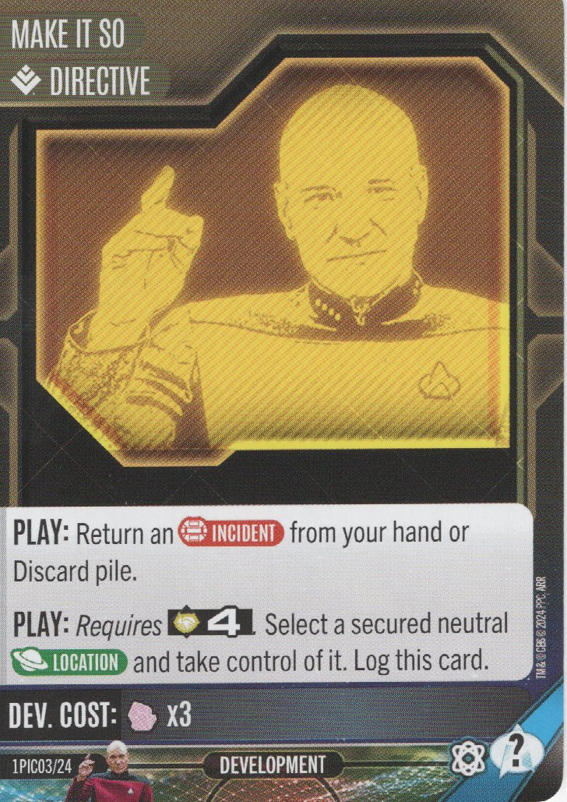
Dev Cost: 3 Dilithium
Make It So has no action token costs, which is a positive right off the bat. The first and repeatable ability allows for the return of incidents, which is good in a late-game pinch if you've decided not to get Deanna Troi. The real power is controlling a secured neutral location. I prefer to use this card to accomplish that goal and leave the incident returning to Deanna. This is great for a final turn control where you would otherwise be stuck gaining points for your three tokens. It's also great for getting control out of the way on a turn where the control ability is more valuable mid-Action Phase than in the Control Phase.
↑ back to topWhen evaluating late-game strategies for Developments, Picard has an issue, and that is that these cards are almost all fantastic. Therefore, the question of which Development to go after first largely depends on the point in the game you are at. If you're on Stardate card three or earlier, I always start with the Bozeman and go into Starbase 74. These cards give you a lot of flexibility going forward, especially the Bozeman because you can get additional Developments. I also really like taking Troi early as detailed before, and pairing her with Data can fuel a lot of card logging. If I'm low on Dilithium, I like Geordi as an option, especially in coordination with Phasing Cloak to get more ships out. This is especially helpful as Picard can be a little slow at deploying ships early in the game. Making up for that, you can use Make It So to speed up location control which is almost never a bad option. The Tamarians are really good if you haven't thinned your deck, or if it's thinned enough that you know there's not a terribly high amount of one single type of card. I also really like Daystrom Institute in theory but there's got to be enough time to get it played and use it a few times to really make it better than some of the other options out there. All of Picard's track focus bonuses are from Research or Influence, so it really does support the strategy of going up those two tracks and gaining cards with those focuses as often as possible.
↑ back to topPutting It All Together
Picard is the recommended deck for starting players, but that doesn't mean that there aren't strategic decisions that bring a lot of depth to his gameplay. I've already touched on the Data strategy of logging everything in sight, but that can backfire if you log the wrong cards. It also benefits from a longer game, as Data needs some time to build up a log that actually has enough cards in it to support moving up tracks. My highest scoring Picard games occurred when I wasn't rushing because the bot or my opponent weren't rushing. That being said, Picard can easily get blindsided by an opponent that is taking control of locations using ships, as he may be unable to get away teams out. In that case, focusing on getting Phasing Cloak deployed is a must.
Some of Picard's cards also emphasize gaining glory over strong gameplay combos, and in a game that is rushing towards the end it is key to get those cards out. Tamarians for example are great for a game where you might only get one or two developments. Same for the Make It So directive. While there is some risk to taking a lot of Incidents, Picard's deck has plenty of ways to deal with them, from Crusher to Troi to the repeatable action on Make It So. As long as your opponent cannot easily end the game by causing the burn (with the knowledge that you will lose), you're relatively safe early on to take incidents for Ships.
If you decide not to get a lot of ships early on, then getting Geordi first and focusing on gaining ships and free-playing them is a great strategy for late game. Just understand that your opponent may control a lot of locations while you get to that point. Riker's Play action continues to be extremely useful as the game progresses. I would strongly suggest using it often as possible, especially in relation to a particularly dynamic control benefit. If you have Riker as your duty officer for a while, you might also consider looking for cards that have a Latinum cost as you should have plenty on hand.
I can't definitively recommend any cards from the general market at this point, though I do believe Picard benefits from anything with a research skill restriction as he should easily be able to meet that requirement. I also like anything with extra card draw, though that's not necessarily unique to Picard. None of his Developments offer additional action tokens, so the Enterprise B or C would be great as would Phasers if you can get up to spot 4 on the Military track.
Video Playthroughs
Tutorials and playthroughs by Paul Grogan (Gaming Rules!) featuring Picard: